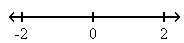
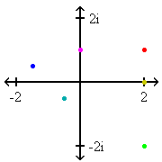
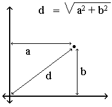

The Mandelbrot set, named after Benoit Mandelbrot, is a fractal. Fractals are beautiful objects that display self-similarity at various scales. Magnifying a fractal reveals small-scale details similar to the large-scale characteristics. Although the Mandelbrot set is self-similar at magnified scales, the small scale details are not identical to the whole. In fact, the Mandelbrot set is infinitely complex. Yet the process of generating it is based on an extremely simple equation involving complex numbers.
The Mandelbrot set is a mathematical set, a collection of complex numbers. Remember that complex numbers have two parts: a real one and an imaginary one. The imaginary part is equal to a real number times a special number called i. For example, a valid complex number is 2.5+3i.
The number i was invented because no real number can be squared (multiplied by itself) and result in a negative number. The number i is defined to be the square root of -1. So when you square an imaginary number you can get a negative number. For example, 3i squared is -9.
 Real numbers can be represented on a one dimensional line called the real number line. Negative numbers like -2 are plotted to the left of zero and positive numbers like 2 are plotted to the right of zero. Any real number can be graphed on the real number line.
 Since complex numbers have two parts, a real one and an imaginary one, we need a second dimension to graph them. We simply add a vertical dimension to the real number line for the imaginary part. Since our graph is now two-dimensional, it is a plane, the complex number plane. We can graph any complex number on this plane. The dots on this graph represent the complex numbers: [2 + 1i], [-1.5 + 0.5i], [2 - 2i], [-0.5 - 0.5i], [0 + 1i], and [2 + 0i].
The Mandelbrot set is a set of complex numbers, so we graph it on the complex number plane. However, first we have to find many numbers that are part of the set. To do this we need a test that will determine if a given number is inside the set or outside the set. The test is based on the equation Z = Z2 + C. C represents a constant number, meaning that it does not change during the testing process. C is the number we are testing, the point on the complex plane that will be plotted when testing is complete. Z starts out as zero, but it changes as we repeatedly iterate this equation. With each iteration we create a new Z that is equal to the old Z squared plus the constant C. So the number Z keeps changing throughout the test.
 We're not really interested in the actual value of Z as it changes, we just look at its magnitude. The magnitude of a number is its distance from zero.To calculate the magnitude of a complex number, we add the square of the number's distance from the x-axis (the horizontal real axis) to the square of the number's distance from the y-axis (the imaginary vertical axis) and take the square root of the result.
As we iterate our equation, Z changes and so does its magnitude. The magnitude of Z will do one of two things. It will either stay equal to or below 2 forever, or it will eventually surpass two (strictly bigger than 2). Once the magnitude of Z surpasses 2, it will increase forever. In the first case, where the magnitude of Z stays small, the number we are testing is part of the Mandelbrot set. If the magnitude of Z eventually surpasses 2, the number is not part of the Mandelbrot set.
As we test many complex numbers we can graph the ones that are part of the Mandelbrot set on the complex number plane. If we plot thousands of points, an image of the set will appear, as illustrated in the figure in the upper right corner. We can add color to the image if we add colors to the points that are not inside the set, according to how many iterations were required before the magnitude of Z surpassed two.
To make exciting images of tiny parts of the Mandelbrot set, we just zoom in on it, trying to perceive its full infinite beauty.
Problem
Your task is to plot a region of the Mandelbrot set using only
simple text, this is, only with ASCII characters.
Input
The first line of input contains an integer T which is the number of test cases that follow.
Each test case is given in a line with the following format:
"CHARS MINI MAXI PRECI MINR MAXR PRECR", where
What you must do is to plot the following graph:
[MINI , MINR] [MINI , MINR+PRECR] (...) [MINI+PRECI , MINR] [MINI+PRECI , MINR+PRECR] (...) [MINI+2*PRECI, MINR] [MINI+2*PRECI, MINR+PRECR] (...) (...) (...) (...) (...) (...) [A,B]
where [A,B] are the last coordinates that are smaller or equal than [MAXI,MAXR].
Each one of this coordinates must be plotted as a single char. If
one iteration was required before the magnitude of Z surpassed two,
then the first char of CHARS is plotted, if two iterations are needed,
then the second char is plotted and so on until 12 iterations. If after
twelve iterations the magnitude of Z has not surpassed Z, then the
char " " (space) is plotted.
Output
The output consists of the required number of lines and columns to plot the specified region of the Mandelbrot set. All lines in output should be terminated with a newline.
Different test cases should be separated by a single blank line.
Sample Input
2 "#$&/|[]+;:-." -1.2 1.2 0.1 -2 1 0.05 "1234567890AB" -1.2 -0.8 0.02 -0.5 0.5 0.02
########$$$$$$$$$$&&&&&&&&&&&&&&&&&&&&&&&&&$$$$$$$$$$$$$$$$$$
#######$$$$$$$&&&&&&&&&&&&&&&&/////| +||///&&&&$$$$$$$$$$$$$$
######$$$$$&&&&&&&&&&&&&&&&//////||[]-;- |////&&&&$$$$$$$$$$$
#####$$$&&&&&&&&&&&&&&&&///////|||[+; -+[||////&&&&&$$$$$$$$
####$$&&&&&&&&&&&&&&&&///////||[[]+ +[||||//&&&&&&$$$$$$
###$$&&&&&&&&&&&&&&//////||[]++++;: :;+[[[ |//&&&&&$$$$$
##$$&&&&&&&&&&&&&////||||[[]. . |/&&&&&&$$$$
##$&&&&&&&&&&&//|||||||[[[+ . ][|/&&&&&&$$$
#$&&&&&&&///||].]]]]]]]]]+- ; |//&&&&&&$$
#&&&//////|||[]: . -;;- +[//&&&&&&&$
#&//////||||[]+- ]|///&&&&&&$
#/////[[[[]+. +[|///&&&&&&$
.+][|///&&&&&&&
#/////[[[[]+. +[|///&&&&&&$
#&//////||||[]+- ]|///&&&&&&$
#&&&//////|||[]: . -;;- +[//&&&&&&&$
#$&&&&&&&///||].]]]]]]]]]+- ; |//&&&&&&$$
##$&&&&&&&&&&&//|||||||[[[+ . ][|/&&&&&&$$$
##$$&&&&&&&&&&&&&////||||[[]. . |/&&&&&&$$$$
###$$&&&&&&&&&&&&&&//////||[]++++;: :;+[[[ |//&&&&&$$$$$
####$$&&&&&&&&&&&&&&&&///////||[[]+ +[||||//&&&&&&$$$$$$
#####$$$&&&&&&&&&&&&&&&&///////|||[+; -+[||////&&&&&$$$$$$$$
######$$$$$&&&&&&&&&&&&&&&&//////||[]-;- |////&&&&$$$$$$$$$$$
#######$$$$$$$&&&&&&&&&&&&&&&&/////| +||///&&&&$$$$$$$$$$$$$$
########$$$$$$$$$$&&&&&&&&&&&&&&&&&&&&&&&&&$$$$$$$$$$$$$$$$$$
333333333333333333333333333333333222222222222222222
333333333333334444433333333333333332222222222222222
333333334444444444444444433333333333322222222222222
333334444444445555555444444433333333333222222222222
334444444444558866555554444444433333333332222222222
444444444445567 9B755555444444444333333333322222222
4444444444555678B9766555544444444433333333332222222
4444444445555668A0866666554444444444333333333322222
44444444555556670 A87667765444444444433333333332222
4444444555556667 08778A75544444444443333333333322
444444555555666790 99AA 6554444444444333333333332
444444555555667889 B A76654444444444433333333333
444445555555677889A A9876655444444444443333333333
444455555556677880A B09876655544444444444333333333
44455555556677889A A9877655554444444444433333333
4455555556677899 9887665555544444444443333333
4555555566789 0AB 0988765555554444444444333333
555555566680B AAB 866555555444444444433333
5555566667A B876555555554444444433333
55566666789AB A76655555555444444443333
566666677880B B977665555555554444444333